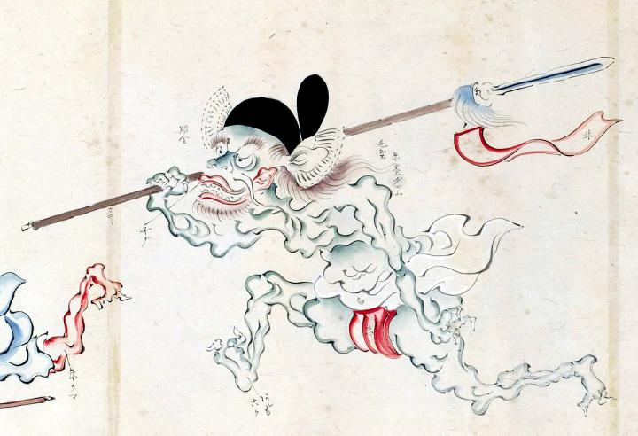

前方へ走り出す青鬼。冠をかぶり、矛を担ぎ、衛侍の姿で描かれている。冠には馬の尻尾の毛でできた半月形の飾りがついている。また、矛の先には赤い小旗と染毛がつけられている。
著作者：玉水写／出典：親書誌：U426_nichibunken_0095：土佐光起百鬼夜行之圖；トサミツオキヒャッキヤギョウノズ／日付：2007／資源識別子：U426_nichibunken_0095_0001_0000
Copyright (c)2010- International Research Center for Japanese Studies, Kyoto, Japan. All rights reserved.